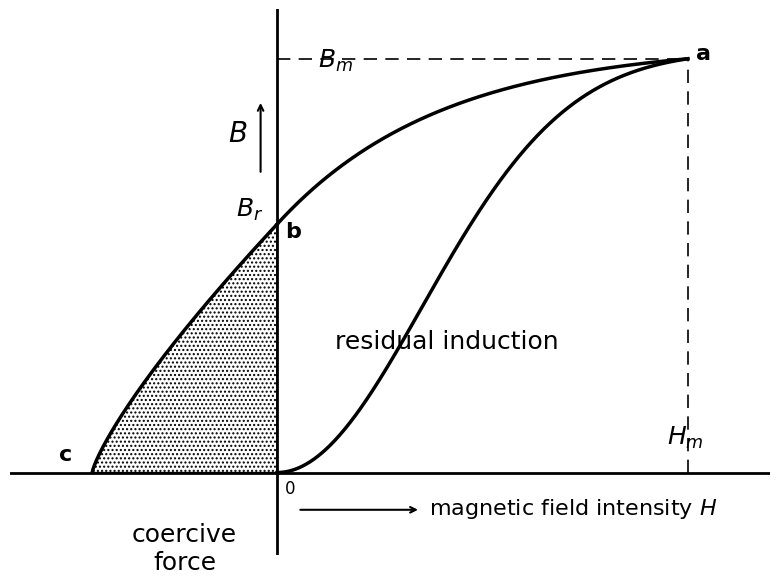
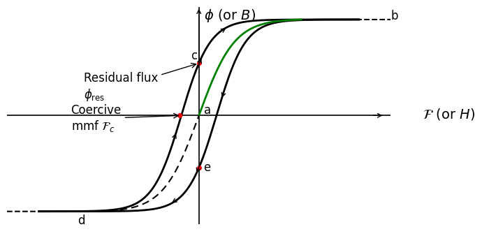
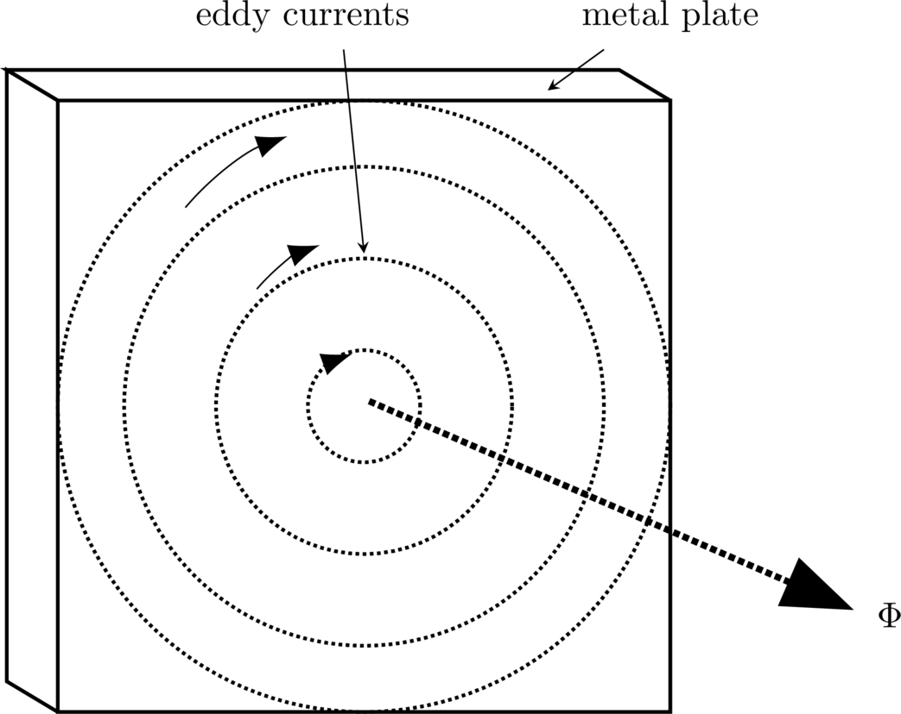
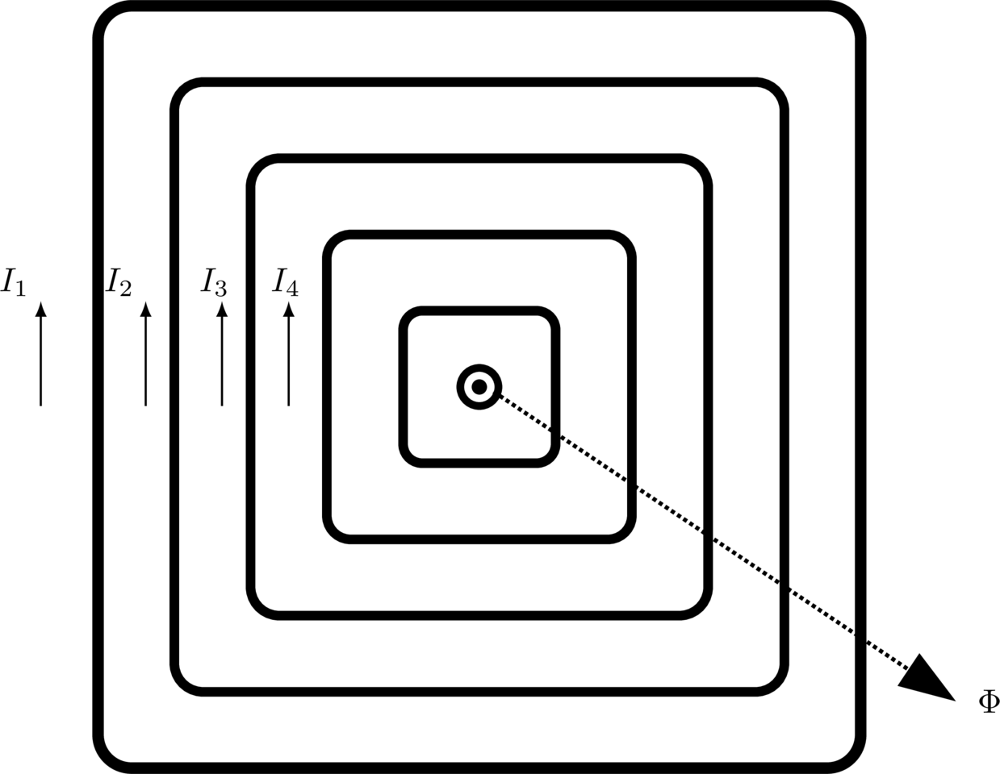

Magnetic circuits#
Some points to understans magnetic circuits
- Residual flux density and coercive force
- Hysteresis Loop
- Hysteresis loss
- Eddy currents
So we have seen that the current in a coil of wire wrapped around a core produces a magnetic flux in the core \(\Phi\)
As shown in Table 3, the magnetic circuit is analogous to the electric circuit.

Fig. 2 Magnetic core with coil.#
Electric Circuit |
Magnetic Circuit |
|---|---|
Ohm’s law |
Analogous to Ohm’s law |
\(V = I\cdot R\) |
\(\mathcal{F} = \Phi \mathcal{R}\) |
\(V\) = electromotive force (emf) |
\(\mathcal{F}\) = magnetomotive force (mmf) \((NI)\) |
Energy Losses in a Ferromagnetic core#
The main losses in electromagnetic processes are:
Hysteresis loss
Eddy current loss
In this lecture we will understand the losses, and in later lectures we will investigate how to model them
Faraday’s law of electromagnetic induction#
Faradays law of electromagentic induction states the fundamental relationship between voltage and flux in a circuit
If the flux linking a loop (or turn) varies as a function of time, a voltage is induced between its terminals
The value of the induced voltage is proportional to the rate of change of flux
Described by
where
emf = electromotove force -induced voltage [V]
N = Number of turns in the coil
\(\Delta \Phi\) = change of flux inside the coil [Wb]
\(\Delta t\) = time interval during which the flux changes [s]
Voltage induced in a conductor#
Easier to calculate length of conductors than whenever a concuctor cuts a magnetic field
where
emf = electromotive force -induced voltage [V]
B = flux density [T]
l = active length of the conductor in the magnetic field [m]
v = relative speed of the conductor [m/s]
Lorentz force on conductor#
where
emf = electromotove force -induced voltage [V]
B = flux density [T]
l = active length of the conductor [m]
I = current in the conductor [A]

Fig. 3 Magnetic force between North and South pole in a magnet#

Direction of the force acting on a straight conductor#
A current carrying conductor in a magnetic field will assert a force.
The force is given by how the magnetic field lines aligns itself
Magnetic field lines goes out of the North pole and into the South pole
A cross gives the direction of current going into the page. According to Maxwells right hand rule (corkscrew) the circular lines of force are given in (a)
Yet magnetic field lines will never cross each other, but align up in such a manner that the magnetic field above the conductor will add, and the magnetic field beneth the conductor will cancel each other out, so that in the end there is more magnetic field lines above.
The force excelled on the conductor is going down.

Fig. 4 The right hand rule when current goes into the page#

Fig. 5 The magnetic fields combined#

Fig. 6 The sum of the magnetic fields excells a Lorents force#
Residual flux density and coercive force#
Starting from zero I increase, there is an increase in H and B, traced in curve 0-a. The flux density reaches a value \(B_m\) for a magnetic field strength \(H_m\).
If the current is reduced to zero the flux density traces curve a-b. The magnetic domains that were lined up under the influence of \(H_m\) retain their original orientation.
When H is reduced to zero, a substantial flux density remains: The residual flux density or residual induction \(B_r\).
The magnetic field strength required to reduce the flux to zero is called coercive force \(H_c\). This requires energy that is dissipated as heat in the material
# TEST CELL
import numpy as np
import matplotlib.pyplot as plt
# Parameters
Hm = 1.0
Bm = 1.0
Br = 0.6
Hc = -0.45
# Demagnetization curve (b -> a)
H1 = np.linspace(0, Hm, 400)
f1 = 1 - np.exp(-2.5 * H1 / Hm)
B1 = Br + (Bm - Br) * f1 / f1[-1]
# Coercive-force branch (c -> b)
H2 = np.linspace(Hc, 0, 250)
B2 = Br * ((H2 - Hc) / (-Hc)) ** 0.8
# Initial magnetization curve (o -> a)
H3 = np.linspace(0, Hm, 400)
f3 = 1 - np.exp(-4 * (H3 / Hm) ** 2)
B3 = Bm * f3 / f3[-1]
# Plot
fig, ax = plt.subplots(figsize=(8, 6))
# Axes
ax.axhline(0, color="black", lw=2)
ax.axvline(0, color="black", lw=2)
# Curves
ax.plot(H1, B1, color="black", lw=2.5)
ax.plot(H2, B2, color="black", lw=2.5)
ax.plot(H3, B3, color="black", lw=2.5)
# Shaded coercive-force area
ax.fill_between(
H2,
0,
B2,
facecolor="white",
edgecolor="black",
hatch="....",
)
# Construction lines
ax.plot([0, Hm], [Bm, Bm], "k--", lw=1.2, dashes=(8, 5))
ax.plot([Hm, Hm], [0, Bm], "k--", lw=1.2, dashes=(8, 5))
# Key points
ax.text(Hm + 0.02, Bm, "a", fontsize=16, fontweight="bold")
ax.text(0.02, Br - 0.03, "b", fontsize=16, fontweight="bold")
ax.text(Hc - 0.08, 0.03, "c", fontsize=16, fontweight="bold")
# Labels
ax.text(0.10, Bm - 0.02, r"$B_m$", fontsize=18)
ax.text(-0.10, Br + 0.02, r"$B_r$", fontsize=18)
ax.text(Hm - 0.05, 0.07, r"$H_m$", fontsize=18)
# B-axis arrow
ax.annotate(
"",
xy=(-0.04, 0.90),
xytext=(-0.04, 0.72),
arrowprops=dict(arrowstyle="->", lw=1.5),
)
ax.text(-0.12, 0.80, r"$B$", fontsize=20)
# H-axis arrow
ax.annotate(
"",
xy=(0.35, -0.09),
xytext=(0.05, -0.09),
arrowprops=dict(arrowstyle="->", lw=1.5),
)
ax.text(0.37, -0.10, r"magnetic field intensity $H$", fontsize=16)
# Annotations
ax.text(0.14, 0.30, "residual induction", fontsize=18)
ax.text(
Hc / 2,
-0.12,
"coercive\nforce",
fontsize=18,
ha="center",
va="top",
)
# Origin label
ax.text(0.02, -0.05, "0", fontsize=12)
# Appearance
ax.set_xlim(-0.65, 1.20)
ax.set_ylim(-0.20, 1.12)
ax.set_xticks([])
ax.set_yticks([])
ax.set_frame_on(False)
plt.tight_layout()
plt.show()

Hysteresis Loop#
# TEST CELL
import numpy as np
import matplotlib.pyplot as plt
# B-H hysteresis loop
# Horizontal axis (H or mmf)
H = np.linspace(-5, 5, 1000)
# Parameters controlling the shape
Bsat = 3 # saturation level
shift = 0.55 # hysteresis width
spread = 0.9 # controls steepness
# Ascending branch (d -> b)
B_up = Bsat * np.tanh((H + shift) / spread)
# Descending branch (b -> d)
B_down = Bsat * np.tanh((H - shift) / spread)
# Residual flux and coercive force
B_res = Bsat * np.tanh(shift / spread)
H_c = shift
# Plot
fig, ax = plt.subplots(figsize=(7, 8))
# Axes
ax.axhline(0, color="black", lw=1.2)
ax.axvline(0, color="black", lw=1.2)
# Main hysteresis branches
ax.plot(H, B_up, color="black", lw=2)
ax.plot(H, B_down, color="black", lw=2)
# Dashed saturation extensions
H_left = np.linspace(-6, -4.2, 100)
H_right = np.linspace(4.2, 6, 100)
ax.plot(
H_left,
Bsat * np.tanh((H_left - shift) / spread),
"k--",
lw=1.5,
)
ax.plot(
H_right,
Bsat * np.tanh((H_right + shift) / spread),
"k--",
lw=1.5,
)
# arrows
for h0 in [-1.0, -0.2, 0.6]:
ax.annotate(
"",
xy=(h0 + 0.3, Bsat*np.tanh((h0 + 0.3 + shift)/spread)),
xytext=(h0, Bsat*np.tanh((h0 + shift)/spread)),
arrowprops=dict(arrowstyle="->", lw=1),
)
for h0 in [1.0, 0.2, -0.6]:
ax.annotate(
"",
xy=(h0 - 0.3, Bsat*np.tanh((h0 - 0.3 - shift)/spread)),
xytext=(h0, Bsat*np.tanh((h0 - shift)/spread)),
arrowprops=dict(arrowstyle="->", lw=1),
)
# Initial magnetization curve (a -> b)
H_init = np.linspace(0, 3.2, 400)
B_init = Bsat * (
2/(1 + np.exp(-1.8*H_init)) - 1
)
# Normalize so it ends exactly at saturation
B_init = Bsat * B_init / B_init[-1]
ax.plot(H_init, B_init, color="green", lw=2)
# mirrored a -> d curve
ax.plot(
-H_init[::-1],
-B_init[::-1],
'k--',
#color='black',
lw=1.5,
dashes=(5, 3)
)
# Characteristic points
# a
ax.plot(-0.6, 0, "ro", ms=4)
ax.text(0.15, 0.05, "a", fontsize=12)
# b
ax.text(6, 3, "b", fontsize=12)
# c (residual flux)
ax.plot(0, B_res, "ro", ms=4)
ax.text(-0.25, B_res + 0.12, "c", fontsize=12)
# d
ax.text(-3.8, -3.4, "d", fontsize=12)
# e
ax.plot(0, -B_res, "ro", ms=4)
ax.text(0.15, -B_res - 0.10, "e", fontsize=12)
# Residual flux
ax.annotate(
r"Residual flux" "\n" r"$\phi_{\mathrm{res}}$",
xy=(0, B_res),
xytext=(-3.6, 0.55),
fontsize=12,
arrowprops=dict(arrowstyle="->"),
)
# Coercive mmf
ax.annotate(
r"Coercive" "\n" r"mmf $\mathcal{F}_c$",
xy=(-H_c, 0),
xytext=(-4.0, -0.45),
fontsize=12,
arrowprops=dict(arrowstyle="->"),
)
# Axis labels
ax.text(7, -0.08, r"$\mathcal{F}$ (or $H$)", fontsize=14)
ax.text(0.15, 3, r"$\phi$ (or $B$)", fontsize=14)
# Arrowheads on axes
ax.annotate(
"",
xy=(5.8, 0),
xytext=(5.4, 0),
arrowprops=dict(arrowstyle="->"),
)
ax.annotate(
"",
xy=(0, 3.4),
xytext=(0, 1.45),
arrowprops=dict(arrowstyle="->"),
)
# ==================================================
# Formatting
# ==================================================
ax.set_xlim(-6, 6)
ax.set_ylim(-3.4, 3.4)
ax.set_xticks([])
ax.set_yticks([])
for spine in ax.spines.values():
spine.set_visible(False)
ax.set_aspect("equal")
plt.tight_layout()
plt.show()

Hysteresis loss#
The magnetic material absorbs energy during each cycle and this energy is dissipated as heat.
To reduce hysteresis losses one can select magnetic materials that have a narrow hysteresis loop, such as the grain-oriented silicon steel used in the cores of alternating-current transformers
Eddy currents#
Faraday law explains the eddy current losses. When a time-changing flux induces a voltage within a ferromagnetic core in just the same manner as it would in a wire wrapped around that that core
These voltages cause swirls of currents within the core, much like eddies seen at the edges of a river. It is the shape that gives name to eddy currents
{kind=link}

Fig. 7 Eddy currents opposing the flux due to Lenz law#

Fig. 8 Current-loop inducing eddy currents#
{kind=link}

Fig. 9 The effect of several eddy-currents#
Significance:#
The hysteresis loop provides valuable information about the magnetic properties of a material, including its saturation magnetization, retentivity, and coercivity. It helps engineers select appropriate materials for various applications, such as transformers, motors, and magnetic storage devices. The area enclosed by the hysteresis loop represents the energy loss per cycle due to hysteresis, which is important in applications where energy efficiency is critical.